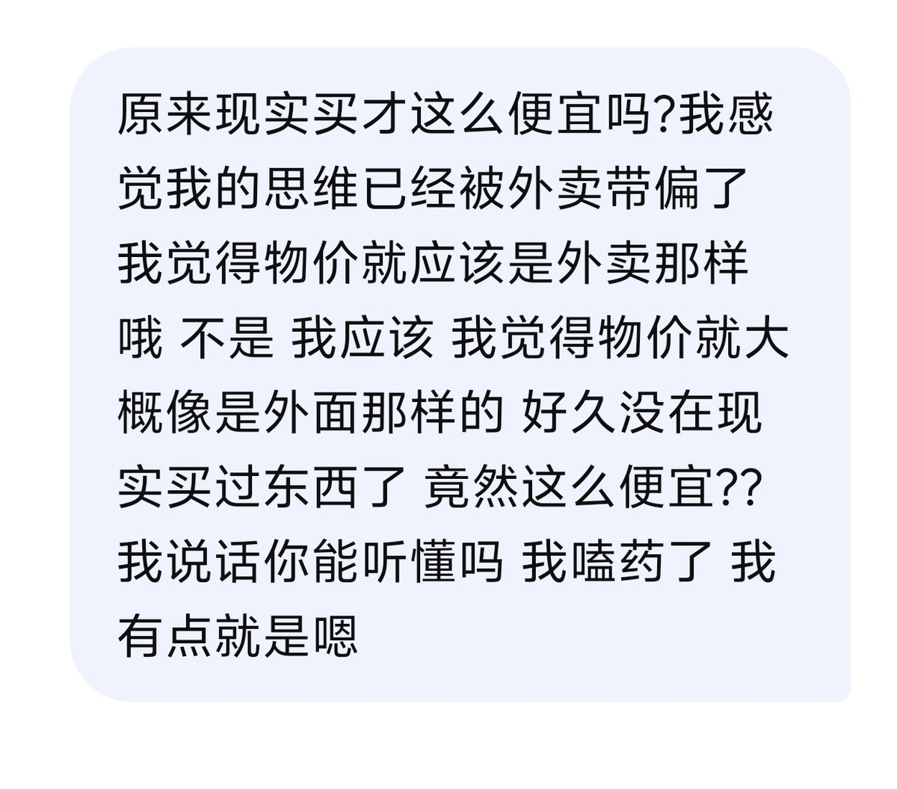
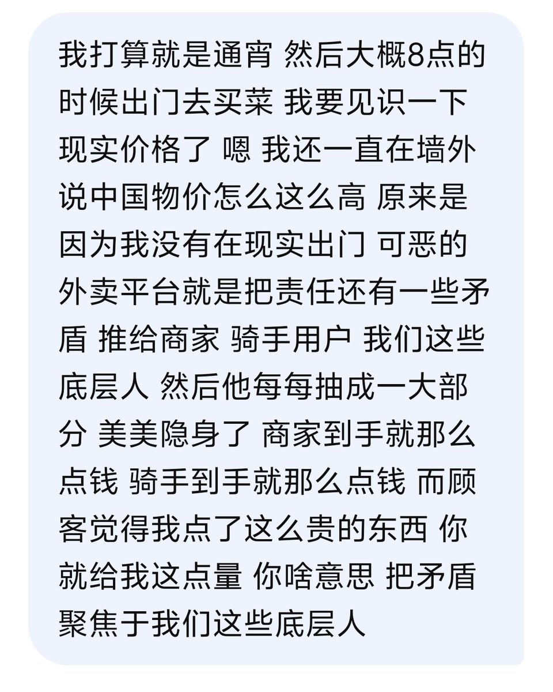
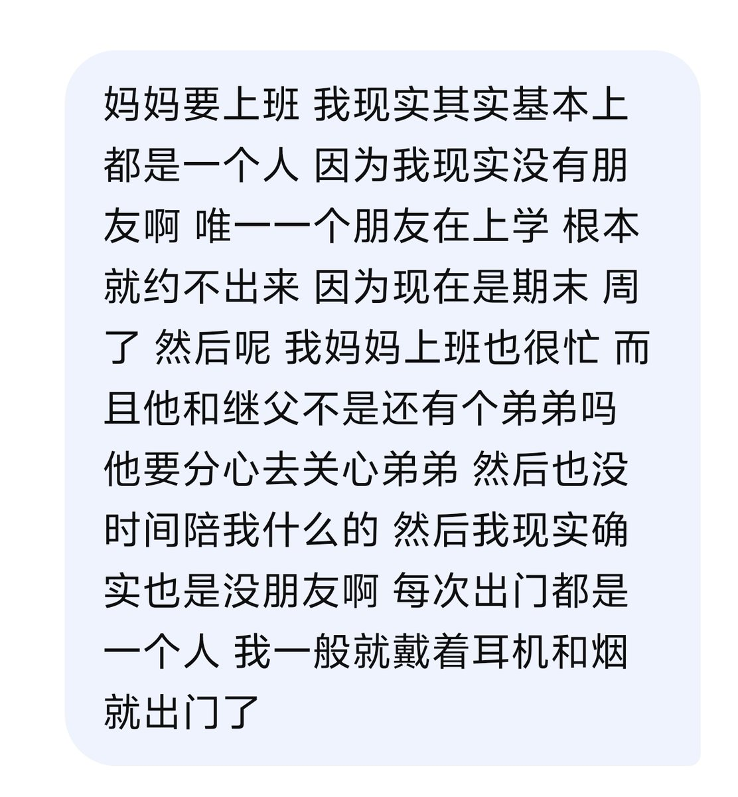

枢纽Toky
@Stolly21_TG
我才发现我p1把外卖说成了外面 这个语音输入咋识别的呀 怎么这么坏



枢纽Toky
@Stolly21_TG
我嗑药 因为手抖打不了字呀 我就喜欢语音输入 然后不知不觉就说了一大堆 而且语序不通 然后可能还有一些错别字呀 但是我就是很喜欢在嗑药的时候去骚扰AI 我不骚扰列表是因为我觉得他们应该会很忙 然后觉得我很烦吧 https://t.co/O9XBEGzSBx